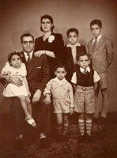

Origens
Plínio Marcos de Barros nasceu em Santos, em 29 de setembro de 1935, e faleceu em São Paulo, em 19 de novembro de 1999. Filho de um bancário (Armando) e de uma dona-de-casa (Hermínia), tinha quatro irmãos e uma irmã.
“A gente veio de origem mais ou menos humilde, mas minha infância foi muito feliz, pelo menos foi muito despreocupada. Morava numa vila de pequenos bancários — na Rua das Antigas Laranjeiras — e foi nessa vila que me criei. A única dificuldade que eu tinha era exatamente o colégio. Eu não suportava a escola. Levei quase dez anos para sair do primário. E quando saí já não dava mais para continuar estudando.”
“Então meu pai me botou de aprendiz de encanador. E eu acabei ficando funileiro. A minha profissão mesmo é funileiro — é o que consta no meu certificado de reservista.” Seu pai, que era espírita, também o colocou para vender livros numa banca de livros espíritas numa praça de Santos. Entre suas múltiplas atividades, inclui-se, ainda, a de estivador no cais do porto de Santos.
“Queria mesmo era ser jogador de futebol. Cheguei até a jogar no juvenil da Portuguesa Santista, no Jabaquara.” Começou a jogar na várzea santista, como ponta-esquerda, e era tido como bom jogador.